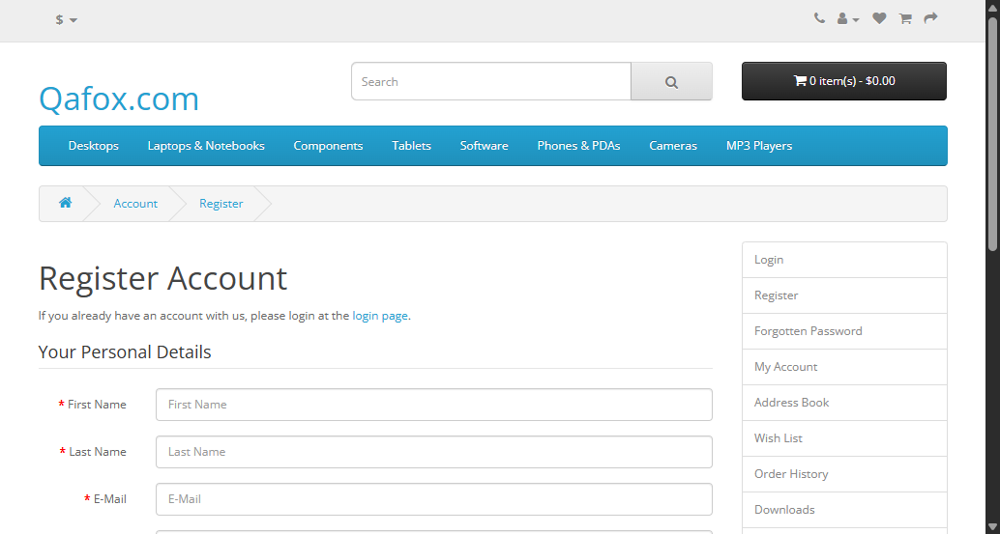

-
TC_RF_005__verifySuccessfulRegistrationWithNewsletter
4:17:33 pm / 00:00:11:687 Pass
TC_RF_005__verifySuccessfulRegistrationWithNewsletter
03.12.2026 4:17:33 pm 03.12.2026 4:17:45 pm 00:00:11:687 · #test-id=1Status Timestamp Details Pass 4:17:45 pm Test Passed Pass 4:17:45 pm Screenshot -
TC_RF_003__verifySuccessfulRegistration
4:17:33 pm / 00:00:00:008 Skip
TC_RF_003__verifySuccessfulRegistration
03.12.2026 4:17:33 pm 03.12.2026 4:17:33 pm 00:00:00:008 · #test-id=2Status Timestamp Details Skip 4:17:33 pm -
TC_RF_002__verifySuccessfulRegistrationEmail
4:17:33 pm / 00:00:00:008 Skip
TC_RF_002__verifySuccessfulRegistrationEmail
03.12.2026 4:17:33 pm 03.12.2026 4:17:33 pm 00:00:00:008 · #test-id=3Status Timestamp Details Skip 4:17:33 pm -
TC_RF_002__verifySuccessfulRegistrationWithoutNewsletter
4:17:33 pm / 00:00:00:003 Skip
TC_RF_002__verifySuccessfulRegistrationWithoutNewsletter
03.12.2026 4:17:33 pm 03.12.2026 4:17:33 pm 00:00:00:003 · #test-id=4Status Timestamp Details Skip 4:17:33 pm -
TC_RF_001__verifySuccessfulRegistrationWithMandatoryFields
4:17:34 pm / 00:00:00:000 Skip
TC_RF_001__verifySuccessfulRegistrationWithMandatoryFields
03.12.2026 4:17:34 pm 03.12.2026 4:17:34 pm 00:00:00:000 · #test-id=5Status Timestamp Details Skip 4:17:34 pm -
TC_RF_007__verifyDifferentRegisterPageNavigation
4:17:54 pm / 00:01:04:048 Pass
TC_RF_007__verifyDifferentRegisterPageNavigation
03.12.2026 4:17:54 pm 03.12.2026 4:18:58 pm 00:01:04:048 · #test-id=6Status Timestamp Details Pass 4:18:58 pm Test Passed Pass 4:18:58 pm Screenshot 
-
TC_RF_004__verifyRegisterFormErrorMessagesWithEmptyFields
4:18:05 pm / 00:00:00:002 Skip
TC_RF_004__verifyRegisterFormErrorMessagesWithEmptyFields
03.12.2026 4:18:05 pm 03.12.2026 4:18:05 pm 00:00:00:002 · #test-id=7Status Timestamp Details Skip 4:18:05 pm -
TC_RF_008__verifyRegistrationWithExistingAccount
4:18:05 pm / 00:00:00:000 Skip
TC_RF_008__verifyRegistrationWithExistingAccount
03.12.2026 4:18:05 pm 03.12.2026 4:18:05 pm 00:00:00:000 · #test-id=8Status Timestamp Details Skip 4:18:05 pm
-
org.openqa.selenium.StaleElementReferenceException
4 tests
org.openqa.selenium.StaleElementReferenceException
4 skippedStatus Timestamp TestName Skip 16:17:33 pm TC_RF_002__verifySuccessfulRegistrationEmail Skip 16:17:33 pm TC_RF_003__verifySuccessfulRegistration Skip 16:17:33 pm TC_RF_002__verifySuccessfulRegistrationWithoutNewsletter Skip 16:17:34 pm TC_RF_001__verifySuccessfulRegistrationWithMandatoryFields -
org.openqa.selenium.TimeoutException
2 tests
org.openqa.selenium.TimeoutException
2 skippedStatus Timestamp TestName Skip 16:18:05 pm TC_RF_004__verifyRegisterFormErrorMessagesWithEmptyFields Skip 16:18:05 pm TC_RF_008__verifyRegistrationWithExistingAccount
Started
Mar 12, 2026 04:17:07 pm
Ended
Mar 12, 2026 04:18:58 pm
Tests Passed
2
Tests Failed
0
Tests
Log events
Timeline
System/Environment
| Name | Value |
|---|---|
| Tester | Souvik |
| OS | Windows 11 |
| Java Version | 21.0.4 |
| Browser | chrome |